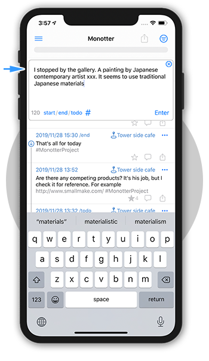
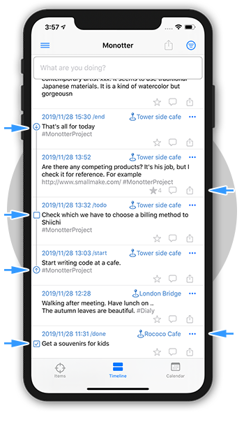
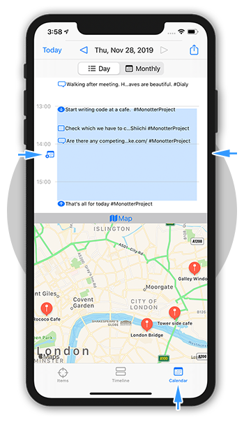
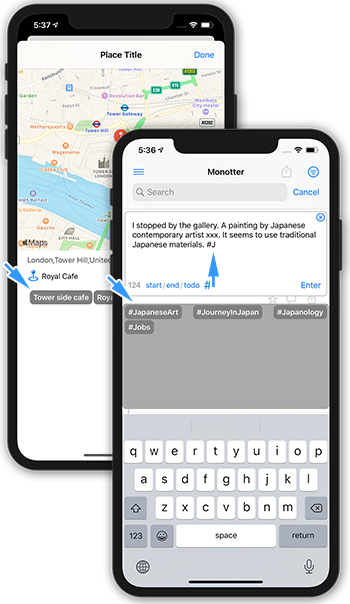
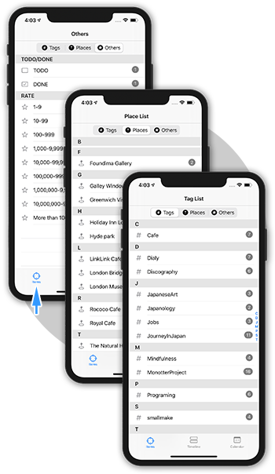
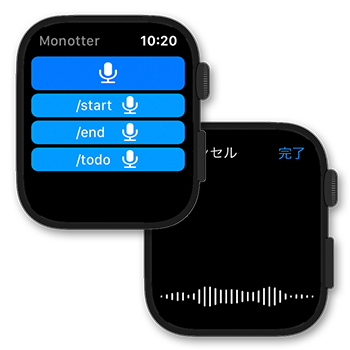

特徴
モノローグによるライフログ・アプリ
ひとりごと（モノローグ）によるライフログ・アプリです。ネットで共有はできません。 モノローグの「モノ」と日本語の動詞活用形過去形である「した」を組み合わせて Monotterと名付けました。 起動してすぐに書き込めます。

場所、開始終了、TODO
モノローグ入力した場所（位置情報）を記録します。場所には名前をつけることができ、同じ場所でのモノローグで再利用されます。 モノローグのテキストの先頭に、/start /end /todo /done の接頭辞を挿入することで、それぞれ「開始」「終了」「TODO」「DONE」の状態にすることができます。 「開始」「終了」は、セットでイベントとして扱われ、これをカレンダーに出力できます。 「TODO]は、チェックボックスを表示します。チェックボックスをタップして「DONE」の状態に変えることができます。 モノローグにはレート数値を設定することができ、重要度に合わせてタップして数値を設定できます。タイムライン一覧は日付のほかレートでも並べ替えることができます。

一日を概観
一日の時間軸の中でのモノローグを概観できます。 イベントは開始終了の範囲を領域表示します。このイベントは、ボタン操作でiPhoneのカレンダーに出力できます。カレンダーをライフログとして使っている場合に有用です。

入力支援
一度場所名を設定すると、同じ場所であれば自動的に再利用されます。追加や再設定する場合などは、既に登録済みの近くの場所名を候補として表示しますので、そこから選択することもできます。 タグ名は、入力時に既に使用しているタグを文字列の前方一致で検索して候補として表示しますので、そこから選択することもできます。

タグ一覧、場所名一覧、その他一覧
使っているタグや場所名を一覧し、タップでワンタッチで検索できます。またこれらの使用件数を表示します。 TODO/DONEやレートも件数で一覧し、タップでワンタッチで検索できます。

Apple Watchに対応
Apple Watchでモノローグ入力できます。（コンプリケーション対応）

Siri ショートカットに対応
Siri ショートカットに対応。定形の文（出勤、クスリを飲んだ記録など）を声のコマンドや場所、NFCタグなどで自動独り言追加できます。